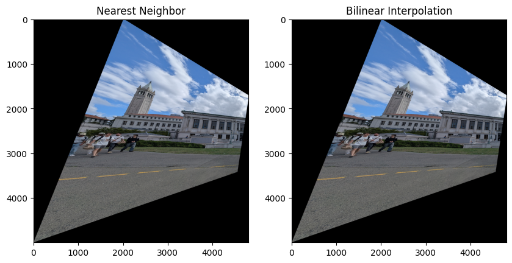
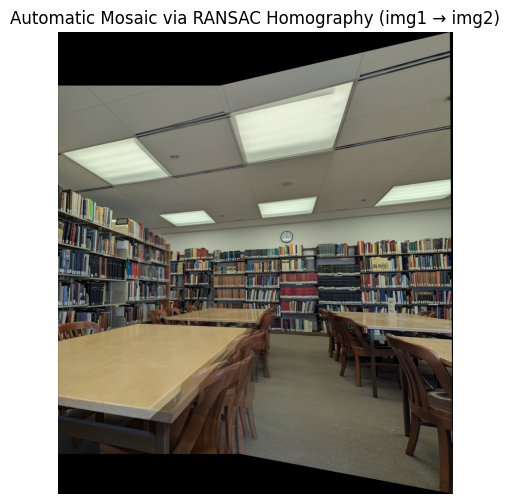
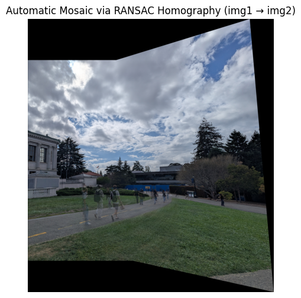
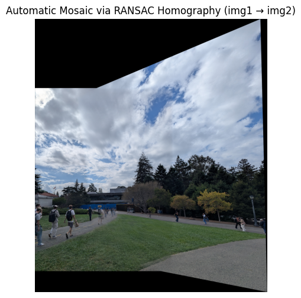

A.1 — Shoot the Pictures
Set 1 — Image 1 Set 1 — Image 2 Set 2 — Image 1 Set 2 — Image 2 Set 3 — Image 1 Set 3 — Image 2
A.2 — Recover Homographies
Given n point correspondences (p, p'), solve p' = H p for the 3×3 homography H (8 dof, set H[2,2]=1 or normalize post‑hoc). Use more than four correspondences and solve via least squares.
Point correspondences visualization System of Equations (for each correspondence):
Point 1: (x=2527.0, y=1678.0) → (u=1725.0, v=1688.0)
2527.0*h1 + 1678.0*h2 + 1*h3 + 0*h4 + 0*h5 + 0*h6 + -4359075.0*h7 + -2894550.0*h8 = 1725.0
0*h1 + 0*h2 + 0*h3 + 2527.0*h4 + 1678.0*h5 + 1*h6 + -4265576.0*h7 + -2832464.0*h8 = 1688.0
Point 2: (x=1824.0, y=1451.0) → (u=1062.0, v=1418.0)
1824.0*h1 + 1451.0*h2 + 1*h3 + 0*h4 + 0*h5 + 0*h6 + -1937088.0*h7 + -1540962.0*h8 = 1062.0
0*h1 + 0*h2 + 0*h3 + 1824.0*h4 + 1451.0*h5 + 1*h6 + -2586432.0*h7 + -2057518.0*h8 = 1418.0
Point 3: (x=2261.0, y=1466.0) → (u=1487.0, v=1472.0)
2261.0*h1 + 1466.0*h2 + 1*h3 + 0*h4 + 0*h5 + 0*h6 + -3362107.0*h7 + -2179942.0*h8 = 1487.0
0*h1 + 0*h2 + 0*h3 + 2261.0*h4 + 1466.0*h5 + 1*h6 + -3328192.0*h7 + -2157952.0*h8 = 1472.0
Point 4: (x=2218.0, y=1313.0) → (u=1443.0, v=1318.0)
2218.0*h1 + 1313.0*h2 + 1*h3 + 0*h4 + 0*h5 + 0*h6 + -3200574.0*h7 + -1894659.0*h8 = 1443.0
0*h1 + 0*h2 + 0*h3 + 2218.0*h4 + 1313.0*h5 + 1*h6 + -2923324.0*h7 + -1730534.0*h8 = 1318.0
Point 5: (x=2860.0, y=1241.0) → (u=2009.0, v=1300.0)
2860.0*h1 + 1241.0*h2 + 1*h3 + 0*h4 + 0*h5 + 0*h6 + -5745740.0*h7 + -2493169.0*h8 = 2009.0
0*h1 + 0*h2 + 0*h3 + 2860.0*h4 + 1241.0*h5 + 1*h6 + -3718000.0*h7 + -1613300.0*h8 = 1300.0
Point 6: (x=2801.0, y=1416.0) → (u=1963.0, v=1459.0)
2801.0*h1 + 1416.0*h2 + 1*h3 + 0*h4 + 0*h5 + 0*h6 + -5498363.0*h7 + -2779608.0*h8 = 1963.0
0*h1 + 0*h2 + 0*h3 + 2801.0*h4 + 1416.0*h5 + 1*h6 + -4086659.0*h7 + -2065944.0*h8 = 1459.0
Point 7: (x=1744.0, y=1519.0) → (u=984.0, v=1485.0)
1744.0*h1 + 1519.0*h2 + 1*h3 + 0*h4 + 0*h5 + 0*h6 + -1716096.0*h7 + -1494696.0*h8 = 984.0
0*h1 + 0*h2 + 0*h3 + 1744.0*h4 + 1519.0*h5 + 1*h6 + -2589840.0*h7 + -2255715.0*h8 = 1485.0
Point 8: (x=1615.0, y=1381.0) → (u=845.0, v=1334.0)
1615.0*h1 + 1381.0*h2 + 1*h3 + 0*h4 + 0*h5 + 0*h6 + -1364675.0*h7 + -1166945.0*h8 = 845.0
0*h1 + 0*h2 + 0*h3 + 1615.0*h4 + 1381.0*h5 + 1*h6 + -2154410.0*h7 + -1842254.0*h8 = 1334.0
Point 9: (x=1128.0, y=1432.0) → (u=309.0, v=1346.0)
1128.0*h1 + 1432.0*h2 + 1*h3 + 0*h4 + 0*h5 + 0*h6 + -348552.0*h7 + -442488.0*h8 = 309.0
0*h1 + 0*h2 + 0*h3 + 1128.0*h4 + 1432.0*h5 + 1*h6 + -1518288.0*h7 + -1927472.0*h8 = 1346.0
Point 10: (x=1321.0, y=1557.0) → (u=528.0, v=1493.0)
1321.0*h1 + 1557.0*h2 + 1*h3 + 0*h4 + 0*h5 + 0*h6 + -697488.0*h7 + -822096.0*h8 = 528.0
0*h1 + 0*h2 + 0*h3 + 1321.0*h4 + 1557.0*h5 + 1*h6 + -1972253.0*h7 + -2324601.0*h8 = 1493.0
Recovered Homography Matrix:
1.351950 6.568187e-03 -1184.644858
0.262277 1.229552e+00 -533.999969
0.000119 -6.898342e-07 1.000000
Point correspondences visualization System of Equations (for each correspondence):
Point 1: (x=2664.0, y=2890.0) → (u=399.0, v=1716.0)
2664.0*h1 + 2890.0*h2 + 1*h3 + 0*h4 + 0*h5 + 0*h6 + -1062936.0*h7 + -1153110.0*h8 = 399.0
0*h1 + 0*h2 + 0*h3 + 2664.0*h4 + 2890.0*h5 + 1*h6 + -4571424.0*h7 + -4959240.0*h8 = 1716.0
Point 2: (x=2706.0, y=3183.0) → (u=369.0, v=2053.0)
2706.0*h1 + 3183.0*h2 + 1*h3 + 0*h4 + 0*h5 + 0*h6 + -998514.0*h7 + -1174527.0*h8 = 369.0
0*h1 + 0*h2 + 0*h3 + 2706.0*h4 + 3183.0*h5 + 1*h6 + -5555418.0*h7 + -6534699.0*h8 = 2053.0
Point 3: (x=2740.0, y=3186.0) → (u=410.0, v=2054.0)
2740.0*h1 + 3186.0*h2 + 1*h3 + 0*h4 + 0*h5 + 0*h6 + -1123400.0*h7 + -1306260.0*h8 = 410.0
0*h1 + 0*h2 + 0*h3 + 2740.0*h4 + 3186.0*h5 + 1*h6 + -5627960.0*h7 + -6544044.0*h8 = 2054.0
Point 4: (x=2698.0, y=2910.0) → (u=439.0, v=1742.0)
2698.0*h1 + 2910.0*h2 + 1*h3 + 0*h4 + 0*h5 + 0*h6 + -1184422.0*h7 + -1277490.0*h8 = 439.0
0*h1 + 0*h2 + 0*h3 + 2698.0*h4 + 2910.0*h5 + 1*h6 + -4699916.0*h7 + -5069220.0*h8 = 1742.0
Point 5: (x=2764.0, y=2939.0) → (u=509.0, v=1776.0)
2764.0*h1 + 2939.0*h2 + 1*h3 + 0*h4 + 0*h5 + 0*h6 + -1406876.0*h7 + -1495951.0*h8 = 509.0
0*h1 + 0*h2 + 0*h3 + 2764.0*h4 + 2939.0*h5 + 1*h6 + -4908864.0*h7 + -5219664.0*h8 = 1776.0
Point 6: (x=2811.0, y=3350.0) → (u=444.0, v=2217.0)
2811.0*h1 + 3350.0*h2 + 1*h3 + 0*h4 + 0*h5 + 0*h6 + -1248084.0*h7 + -1487400.0*h8 = 444.0
0*h1 + 0*h2 + 0*h3 + 2811.0*h4 + 3350.0*h5 + 1*h6 + -6231987.0*h7 + -7426950.0*h8 = 2217.0
Point 7: (x=2993.0, y=3217.0) → (u=675.0, v=2060.0)
2993.0*h1 + 3217.0*h2 + 1*h3 + 0*h4 + 0*h5 + 0*h6 + -2020275.0*h7 + -2171475.0*h8 = 675.0
0*h1 + 0*h2 + 0*h3 + 2993.0*h4 + 3217.0*h5 + 1*h6 + -6165580.0*h7 + -6627020.0*h8 = 2060.0
Point 8: (x=2587.0, y=2940.0) → (u=286.0, v=1776.0)
2587.0*h1 + 2940.0*h2 + 1*h3 + 0*h4 + 0*h5 + 0*h6 + -739882.0*h7 + -840840.0*h8 = 286.0
0*h1 + 0*h2 + 0*h3 + 2587.0*h4 + 2940.0*h5 + 1*h6 + -4594512.0*h7 + -5221440.0*h8 = 1776.0
Recovered Homography Matrix:
-2.690520 0.450881 5121.018741
-1.391221 -2.718983 8384.448437
-0.000778 -0.000270 1.000000
Point correspondences visualization Linear system A h = b
Point correspondences visualization Linear system A h = b
A.3 — Warp the Images
Warp result — Nearest Neighbor
Warp result — Nearest Neighbor
The bilinear ones look a little better. Linear is a little faster.
A.4 — Blend Images into a Mosaic
Register all images to a common canvas (leave one unwarped or create a new reference frame). Blend with feathering (alpha falloff) or a multi‑band method (e.g., Laplacian pyramid) to reduce seams and ghosting.
Source stacks aligned on a common canvas
Source stacks aligned on a common canvas Source stacks aligned on a common canvas
Source stacks aligned on a common canvas
Source stacks aligned on a common canvas
Deliverables: Show three mosaics with their source images. The originals can be seen on the top of the page
A.5 — Bells & Whistles
Cylindrical panorama
Task B — Automatic Image Mosaicing (Autostitch)
In Part B, we automate the correspondence & stitching pipeline: detect interest points (Harris), cull via ANMS, build simple descriptors, match with a ratio test, estimate a robust homography with RANSAC, and finally warp & blend for an automatic mosaic.
B.1 — Harris Corner Detection + ANMS
Input image Harris corners overlaid (no ANMS)
Chosen corners overlaid (with ANMS) Chosen corners overlaid (with ANMS)
B.2 — Feature Descriptor Extraction (8×8 from 40×40)
Corners Normalized 8×8 descriptors (several examples) Normalized 8×8 descriptors rotation invariant
B.4 — RANSAC for Robust Homography
B.7 — Reflection
Key takeaways: ANMS dramatically improves coverage; simple 8×8 descriptors suffice with ratio test + RANSAC; failure cases arise from strong parallax, low texture, or repeated patterns; multi‑band blending reduces residual seams.
Most Important Thing I Learned
Stability of homography estimation with over‑determined correspondences; inverse mapping nuances; alpha design for robust blending; pros/cons of planar vs. cylindrical projection.
Deliverables & Submission (Part B)
Ensure the following are present on this page (Parts A+B):
B.1: b1/harris_overlay.png, b1/anms_overlay.png (plus optional b1/random_overlay.png)B.2: b2/patches40.png, b2/descriptors8x8.pngB.3: b3/matches_set1.png, b3/matches_set2.png, b3/matches_set3.pngB.4: b4/inliers_set#.png and b4/compare#_manual.png vs b4/compare#_auto.png for ≥3 setsB.5: Figures per chosen option + b5/showcase.png
Turn in: your code + this webpage. Submit your public URL to the class gallery via the course form. Your submission for Part B should include the contents of Part A and B.